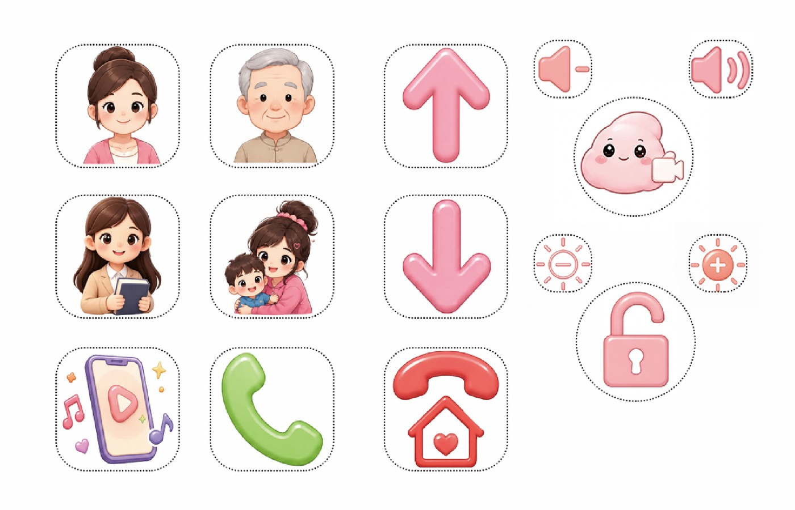
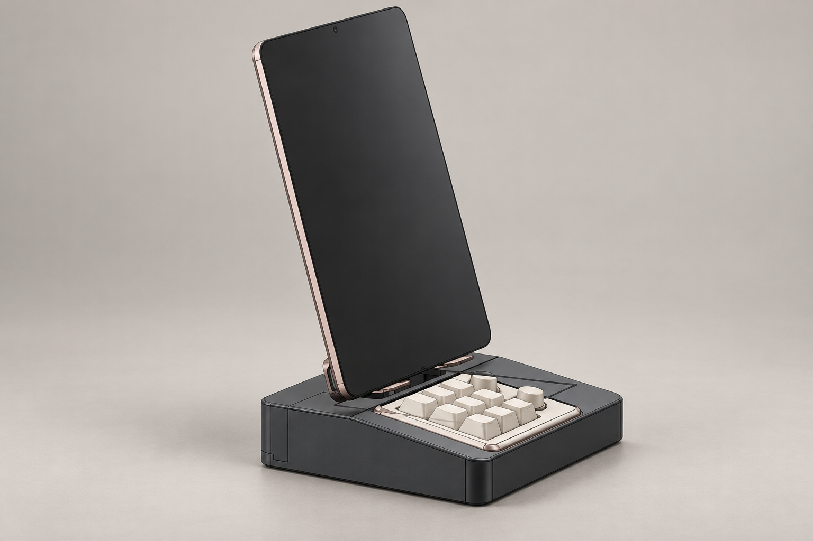
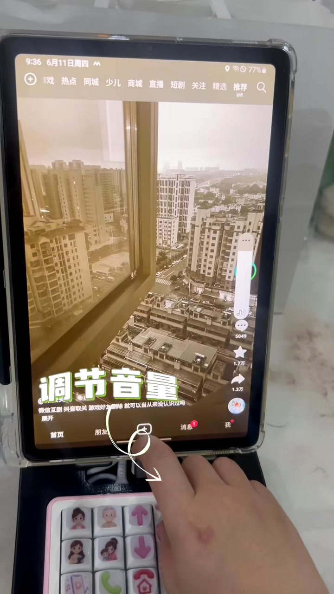
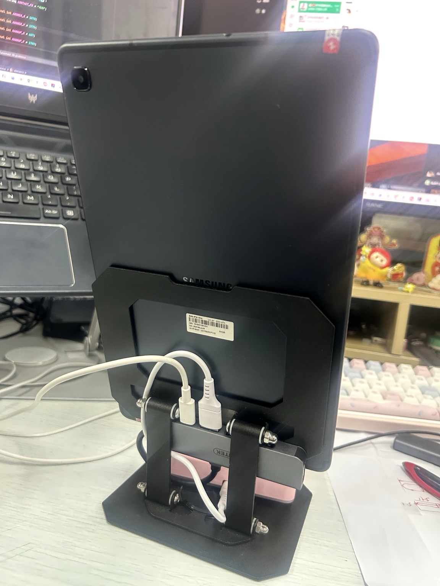
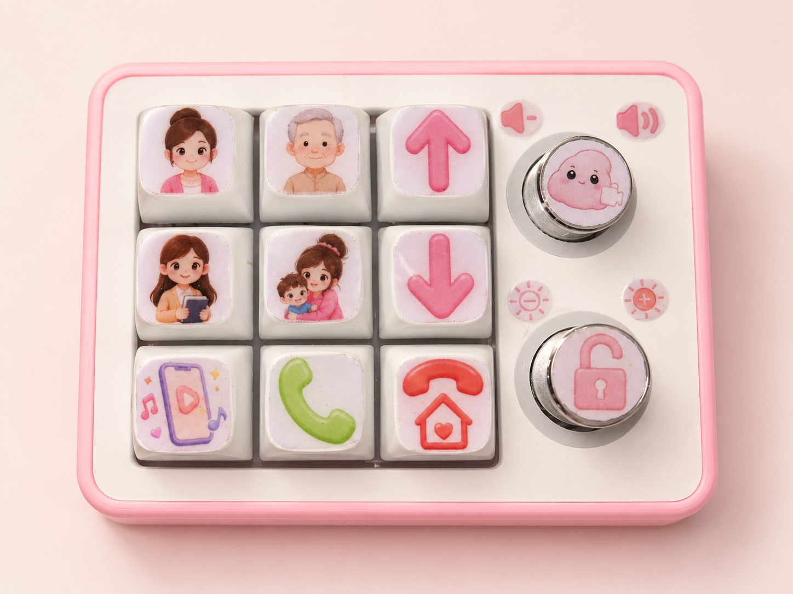
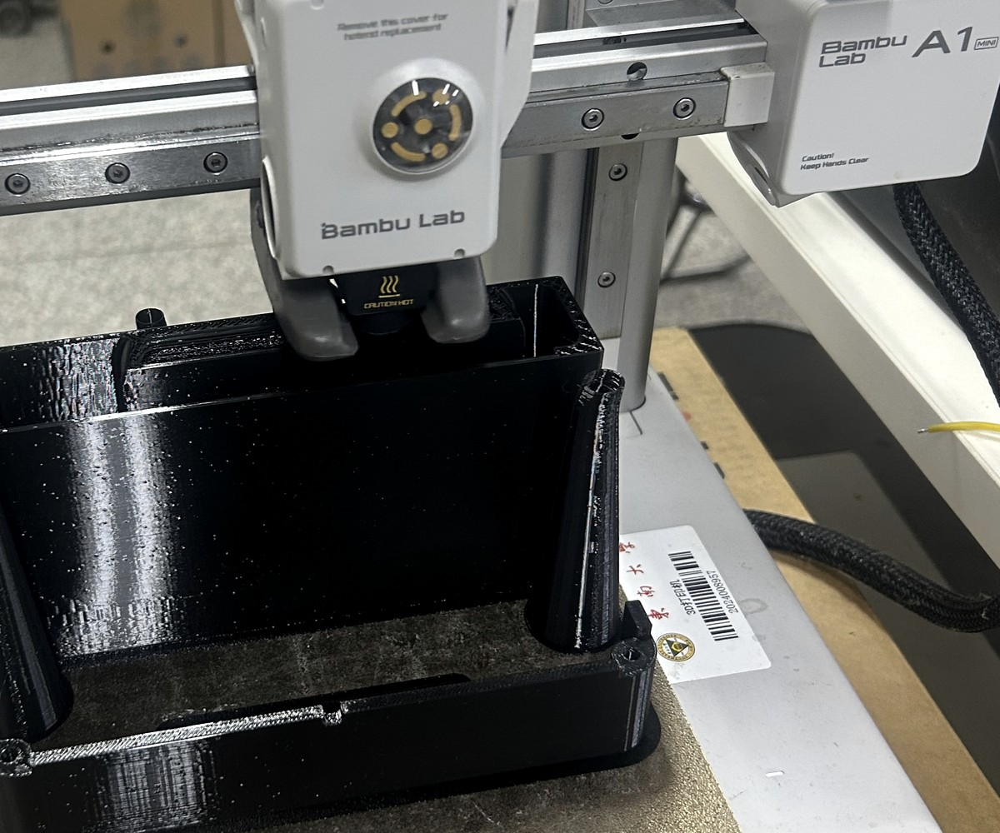

01 / KEY LABELS
为常用联系人和功能画按键图标
四位家人分别使用不同头像；接听、返回、娱乐、亮度和音量也使用固定图形，并贴在九宫格和旋钮上。
个人项目 · 2026
为独居老人设计 · 2026
外公外婆独立居住，不太习惯智能手机和触摸屏。我用大屏 Android 平板、可编程键盘和 3D 打印外壳做了一台终端，让他们可以按一个键联系家人，也能直接打开抖音和豆包。

真实需求
在手机上发起视频通话，需要辨认图标、进入联系人页面，再确认当前的通话状态。我把这些常用操作放到固定的实体按键上，让每个键只负责一件事。
设计目标按键容易辨认；按错后可以直接回到主页。
最终成品



成品组成
01四个常用联系人，一键发起微信视频通话
02独立的接听、挂断与返回按键
03抖音、豆包视频与上下切换
04旋钮控制音量与屏幕亮度
真实运行
操作逻辑
Android 平板显示视频和常用应用。Key Mapper 读取实体按键，AccessibilityService 根据当前页面完成启动应用、选择联系人、接听或返回主页等操作。
精选过程
我先确定家人联系人和常用功能，再设计按键图标。结构部分根据平板和键盘尺寸建模，打印后把控制器、接口和连接线收进外壳。

四位家人分别使用不同头像；接听、返回、娱乐、亮度和音量也使用固定图形，并贴在九宫格和旋钮上。

我根据平板和控制器的尺寸在 SolidWorks 中设计支架与外壳。打印、装配后，控制器和连接线留在结构内部，桌面上只保留屏幕和操作面板。
成品演示
下面是成品的实际操作视频。视频中的个人信息已打码，环境杂音也做了处理。
现在的状态
它目前只在家里使用，还没有经过大规模测试。这个项目让我完整经历了需求梳理、技术验证、交互设计、软件开发、结构建模、3D 打印和实际使用测试。